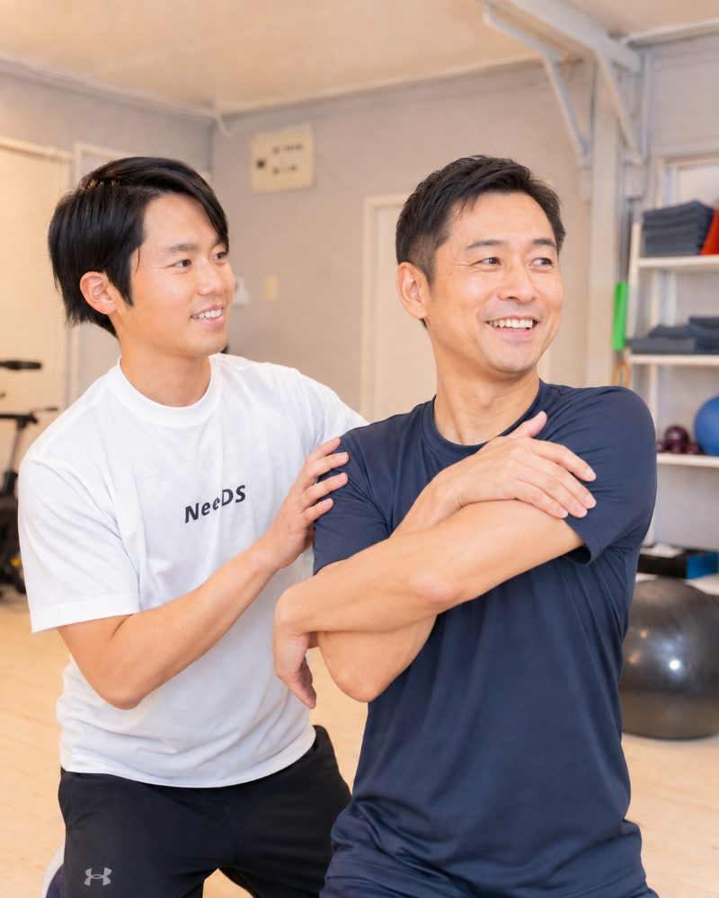
01
胸椎の回旋Thoracic Rotation
スイングの「捻転差」をつくる中心。ここが硬いまま振ると、腰と腕で代償することになり、飛距離が出ないうえに腰痛の原因にもなります。まず胸椎を回せる体に戻す。これが最初の一歩です。
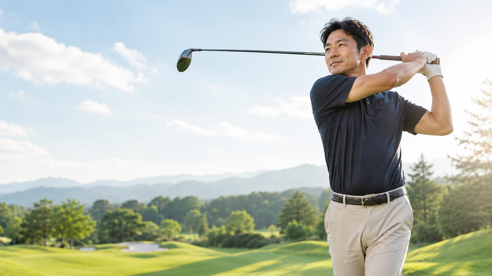
神戸・六甲道 ｜ 40代・50代・60代ゴルファーのためのパーソナルトレーニング
胸椎・股関節・肩甲骨。
この3つが動きを取り戻したとき、
フォームは、直さなくても変わりはじめます。
公式LINEのご登録から、30秒でご予約いただけます。
ゴルフ歴・運動経験は問いません。まずは今の体の状態を知るところから、お気軽にどうぞ。
Issue ゴルファーの体に起きていること
40代を過ぎたあたりから、多くのゴルファーが同じ壁に当たります。技術が落ちたわけではありません。デスクワークと加齢によって胸椎まわりが硬くなり、「捻る」という動作そのものが体からなくなっていくのです。
捻れない体は、腕と手先でクラブを振ろうとします。だから飛ばない。だからスイングがすぐ元に戻る。だからラウンド後に腰が張る。原因は同じ一点にあります。
以前より、明らかに飛ばなくなった 同じ番手で20ヤード落ちた。力んで振るほど、球は曲がっていく。
直したはずのスイングが、すぐ元に戻る レッスンでは打てるのに、コースでは体が言うことを聞かない。
ラウンドの翌日、腰と肩に痛みが出る 後半のホールで集中力よりも先に、体のほうが切れてしまう。
練習量は変えていないのに、スコアが止まった 打ちっ放しに通うほど、疲労だけが残っている気がする。
そのどれもが、「体が動く範囲」の問題です。
動く範囲が戻れば、スイングは自然と変わります。
Concept NeeDSの考え方
動きが変われば、
スイングが変わる。
NeeDSは、フォームを直しません。スイング理論も教えません。私たちが行うのは、スイングという動作をつくっている「体の動き」そのものを設計し直すことです。 鍵になるのは、次の3つの部位。ここが動き出すと、意識して直さなくても、スイングの軌道は変わりはじめます。

スイングの「捻転差」をつくる中心。ここが硬いまま振ると、腰と腕で代償することになり、飛距離が出ないうえに腰痛の原因にもなります。まず胸椎を回せる体に戻す。これが最初の一歩です。
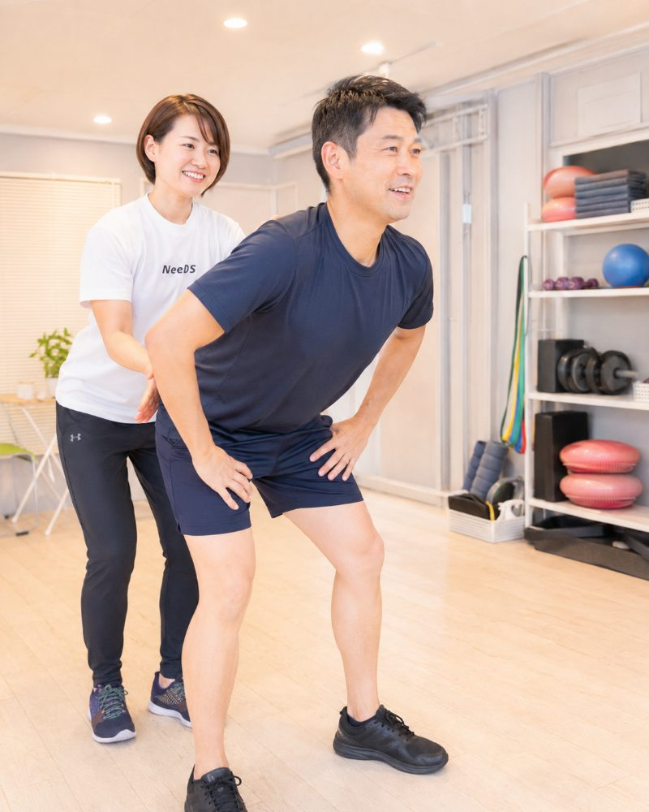
地面からの力をクラブへ伝える通り道。股関節が使えると、下半身から上半身へ順番に力が流れる「しなり」のあるスイングになります。手打ちから抜け出す最短ルートです。
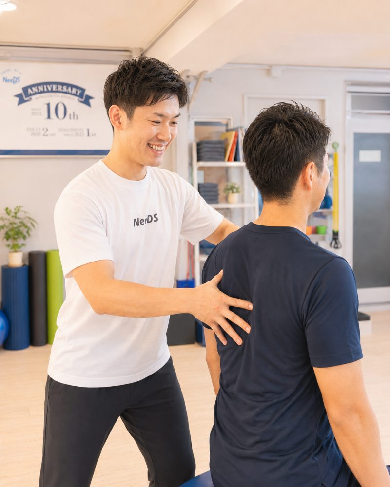
トップの深さと、インパクトの安定を左右する部分。肩甲骨が滑らかに動くと腕は自然に高く上がり、力まずにヘッドスピードが上がる状態が生まれます。
3つの動きが揃うと、体は「振りやすい形」を自分で選ぶようになります。理論を頭に入れて直すのではなく、動ける体になった結果としてフォームが整う。
これが、NeeDSがゴルファーに提供している「動きからスイングを作る」というアプローチです。
Method トレーニングの流れ
闇雲に体を鍛えることはしません。今のあなたの体が「どこで詰まっているのか」を測るところから始め、その一点に対して必要な動きだけを積み上げていきます。
Step 01
胸椎・股関節・肩甲骨を中心に、体がどこまで動くかを一つずつ確認します。左右差、詰まっている方向、力が抜けている部位。ここで「あなたの飛ばない理由」が数値と感覚の両方ではっきりします。
初回体験でも実施しますStep 02
硬さの原因になっている部位をほぐし、動かなくなっていた関節を動かせる状態に戻します。きつい筋トレではありません。多くの方が、この段階で「体が回る」感覚をその場で実感されます。
Step 03
取り戻した可動域を、スイングの中で使えるようにしていきます。下半身から上半身へ力を伝える順番、切り返しでの重心移動。ゴルフ動作に直結する形で、体に覚え込ませていきます。
Step 04
実際にクラブを持った動きで変化を確かめ、次回までのご自宅でのメニューをお渡しします。1日5分程度で続けられる内容です。週1回のご来店でも、体は着実に変わっていきます。
初回の体験は無料です。その場で動作評価まで受けていただけます。
当日は手ぶらでお越しいただけます（ウェア・シューズ・タオルは無料でお貸し出し）。
Trainer 指導するのは、動きの専門家です
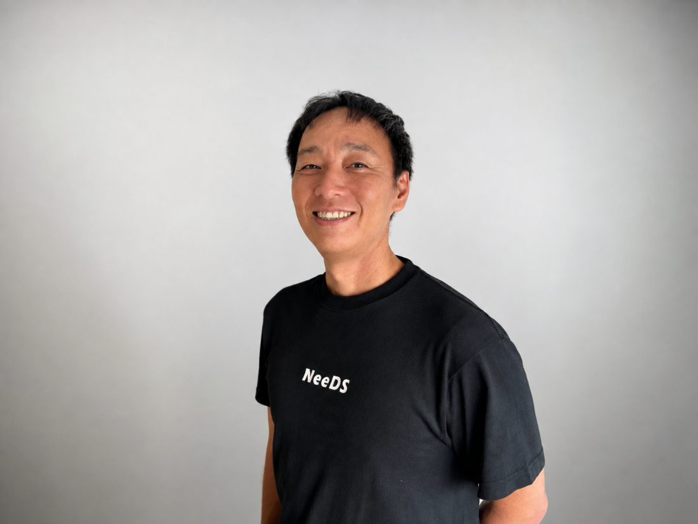
NeeDSゴルフトレーニングメソッド考案者
プロ野球・独立リーグ、MLB傘下マイナー球団の選手に対し、パフォーマンス向上とコンディショニングの指導を行ってきました。専門は「回旋動作」。バッティングとゴルフスイングは、胸椎と股関節を使って体を捻り、その力を末端へ伝えるという点で構造が共通しています。
プロの現場では、フォームをいじる前に必ず体の状態を評価します。同じ順序を、ゴルフを愛する一般の方にも。押しつけや根性論はいたしません。ご自身の体で変化を確かめながら、一歩ずつ進めていきましょう。
Pro Golfer プロゴルファーの声
NeeDSには、プロゴルファーの方々もトレーニングに通われています。技術ではなく「体の動き」を専門に扱うため、すでに完成されたスイングを持つプロにとっても、必要とされる領域があるからです。
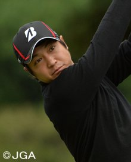
写真は仮股関節・肩甲骨の動きで、飛距離アップ。
NeeDSでトレーニングをさせていただいて、ゴルフスイングがスムーズにやり易くなりました。股関節や肩甲骨の動きも良くなって、それがスイングの改善に役立っているのも感じる事が出来ました。現在も継続して指導しています
元々腰痛があったんですが改善されて、飛距離アップも期待出来るので、一度どういったトレーニングをするのか、是非体験して欲しいですね。
飛距離が10ヤード伸びました。
NeeDSでトレーニングを始めてからヘッドスピードがアップして、飛距離が10ヤード伸びました。一人ひとりの身体ときちんと向き合い、その人に必要なゴルフに結びつけたメニューを組んでいただけるので、飛距離アップやスイング改善に効果的です。
小楠 梨紗 プロ
鍛えた筋力が、そのままスイングの力に変わった。
これまではウエイトトレーニングを中心に取り組んできましたが、NeeDSでトレーニングを始めてからは、瞬発系のトレーニングやゴルフの動きに特化したメニューを通して、ウエイトで鍛えた筋力を実際のスイングで使える動きへと落とし込めるようになりました。スイングのキレや再現性も向上しました。
釣浦 郁真 プロ
［見出しになる一言］
［コメント本文をいただき次第、ここに掲載します］
［お名前］ プロ
※ 掲載内容は個人の感想であり、成果を保証するものではありません。
Voice 通われている方の声
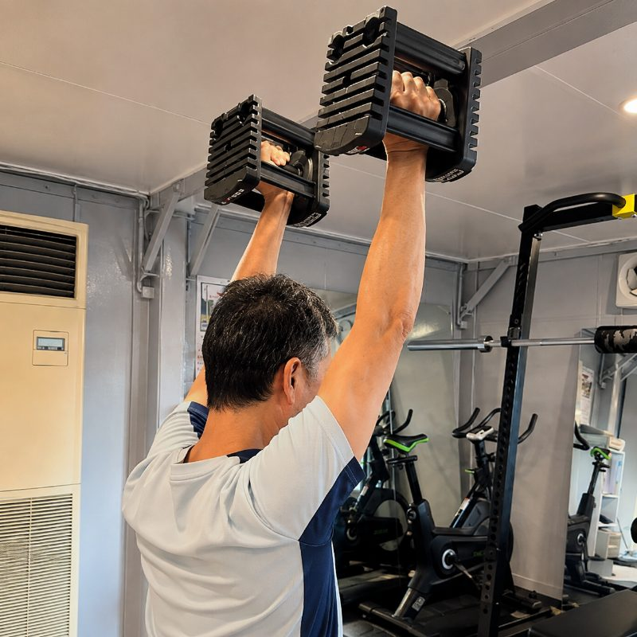
イメージ「ドライバーが、力まなくても飛ぶようになりました」
半年で平均スコアが8打縮まりました。何より、18ホール歩いても後半でバテなくなったのが大きいです。
K.S. 様／52歳・会社役員
ゴルフ歴18年・通われて8ヶ月
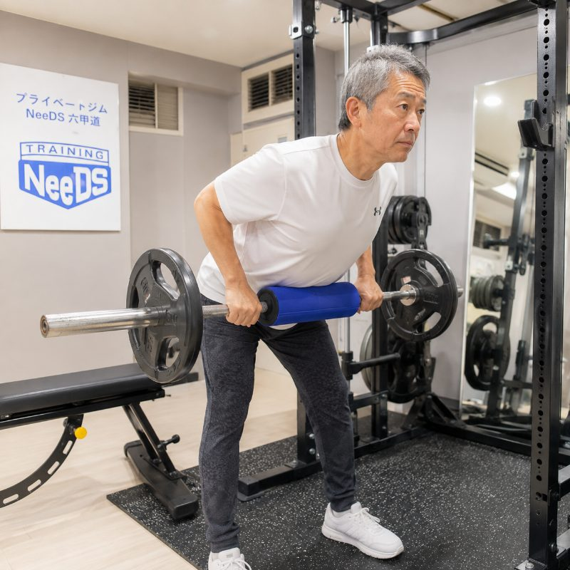
イメージ「ラウンド翌日の腰痛が、なくなりました」
股関節が動くようになってから、腰で無理に捻らなくなったそうです。理由を説明してもらえるので納得して続けられます。
T.M. 様／61歳・自営業
ゴルフ歴30年・通われて1年2ヶ月
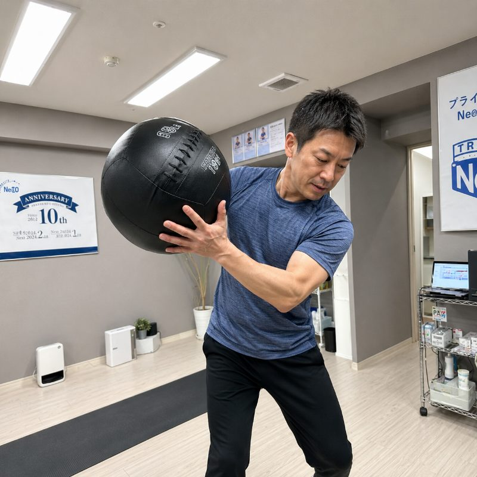
イメージ「レッスンで言われていた意味が、やっと分かった」
「捻転差」を作れと言われ続けてきましたが、そもそも捻れる体ではなかったと。初回の評価でそれが分かった時点で来た甲斐がありました。
Y.H. 様／46歳・会社員
ゴルフ歴9年・通われて5ヶ月
※ 写真・コメントはイメージです。実際にお通いの方のお声は、掲載のご許可をいただき次第、順次差し替えてまいります。
Free Trial まずは、無料体験から
いきなり続けるかどうかを決めていただく必要はありません。初回は無料でお試しいただけますので、動作評価を受けて、実際に体が動くようになる感覚を確かめてからご判断ください。
運動は久しぶり、という方こそ歓迎です。
体力に自信がなくても大丈夫ですので、お気軽にご参加ください。
ご予約は公式LINEから承っています。
ご相談・ご質問だけでも構いません。「今の体で通えるか知りたい」といったメッセージも歓迎です。
FAQ よくあるご質問
Studio 店舗・アクセス
どちらの店舗も完全予約制・完全個室です。お仕事帰りやラウンド前後にもお立ち寄りいただけるよう、夜21時まで営業しています。
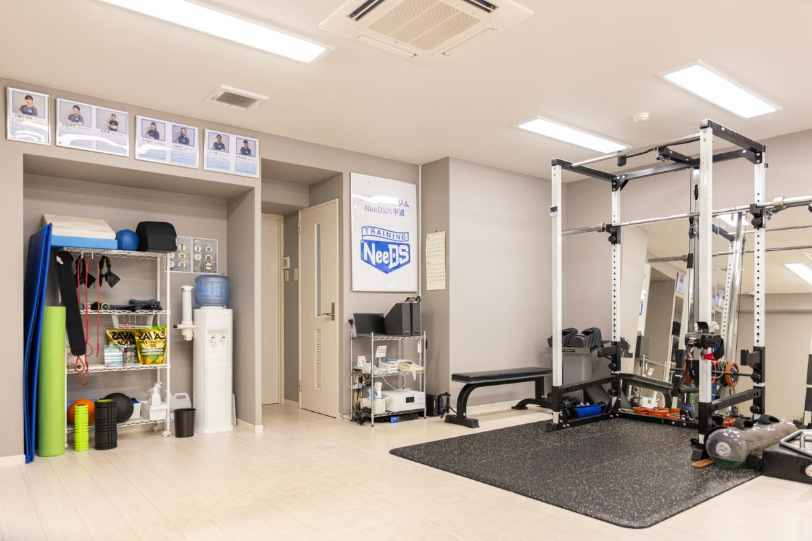
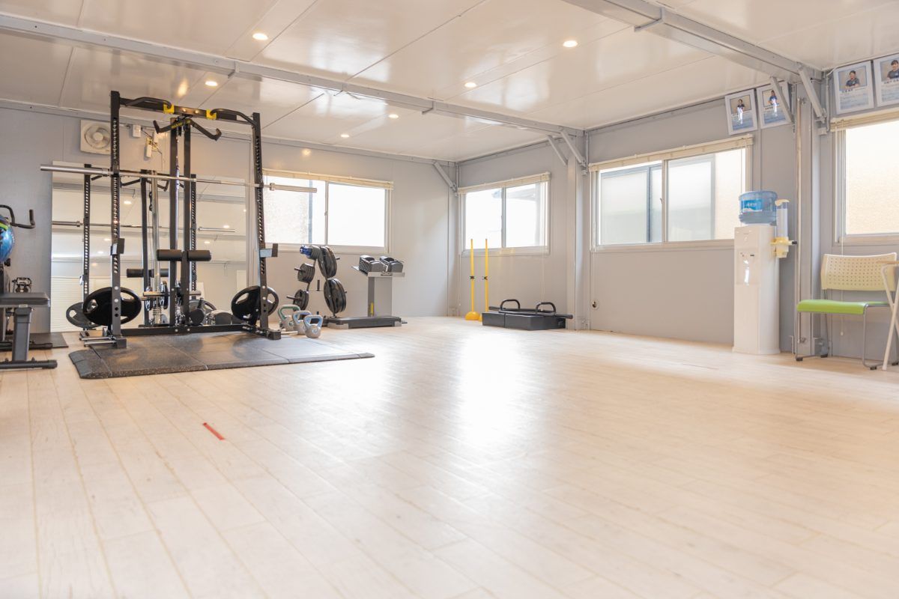
初回無料体験・完全予約制／JR六甲道駅 徒歩5分
無料で体験を受ける